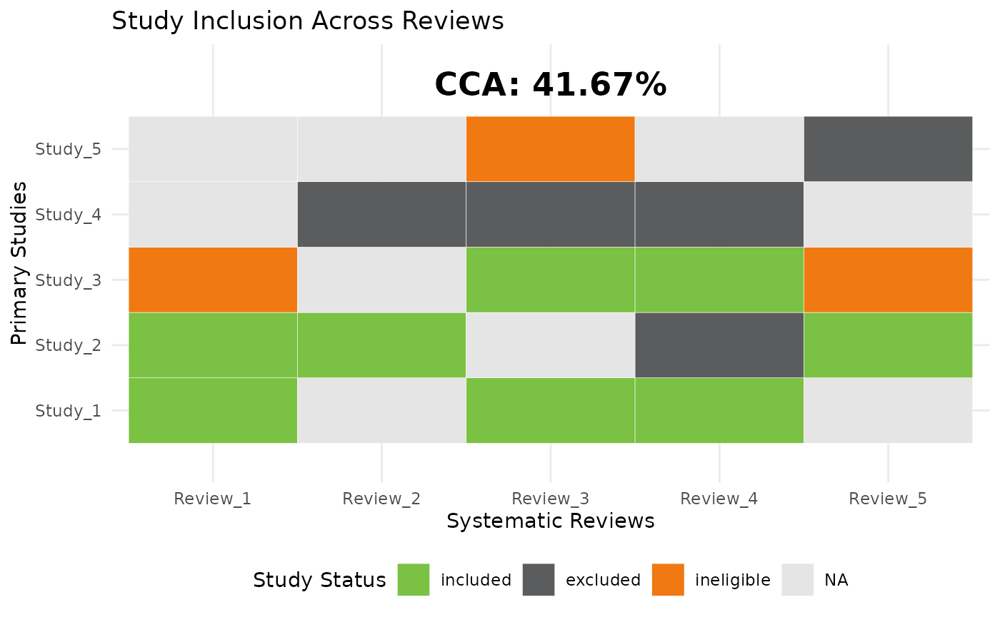

Corrected Covered Area (CCA)
CCA.RmdIntroduction
The Corrected Covered Area (CCA) quantifies the overlap of studies included in multiple systematic reviews. A high CCA value indicates a high degree of overlap, suggesting potential redundancy in evidence synthesis.
This vignette explains:
The formula for CCA
How to compute CCA in R
How to visualize study overlap using a heatmap
CCA Formula
CCA is calculated as:
Where: - = total number of study occurrences across reviews - = number of unique included studies - = number of systematic reviews
Example Data
We use an example dataset with 5 studies across 5 systematic reviews:
library(tidyverse)
library(junoR)
# Example dataset
data <- tibble(
study = rep(paste0("Study_", 1:5), times = 5),
review = rep(paste0("Review_", 1:5), each = 5),
status = c("included", "included", "ineligible", NA, NA,
NA, "included", NA, "excluded", NA,
"included", NA, "included", "excluded", "ineligible",
"included", "excluded", "included", "excluded", NA,
NA, "included", "ineligible", NA, "excluded")
)
# View the data
print(data)## # A tibble: 25 × 3
## study review status
## <chr> <chr> <chr>
## 1 Study_1 Review_1 included
## 2 Study_2 Review_1 included
## 3 Study_3 Review_1 ineligible
## 4 Study_4 Review_1 NA
## 5 Study_5 Review_1 NA
## 6 Study_1 Review_2 NA
## 7 Study_2 Review_2 included
## 8 Study_3 Review_2 NA
## 9 Study_4 Review_2 excluded
## 10 Study_5 Review_2 NA
## # ℹ 15 more rowsCompute CCA
We use the cca_heatmap() function to compute CCA:
# Run the function
result <- cca_heatmap(data)
# Print CCA result
result$CCA## [1] 41.66667This means that 41.6666667% of the included studies are redundant.
Visualising Study Overlap
The function also generates a heatmap showing which studies are included in which reviews:
# Generate heatmap
result$plot
This produces a heatmap where:
Green = included studies
Dark grey = excluded studies
Orange = ineligible studies
Light grey = missing data
Interpretation of Results
| CCA (%) | Overlap Level | Interpretation |
|---|---|---|
| 0-20% | Low | Minimal study redundancy across reviews |
| 21-50% | Moderate | Some overlap, but different studies are included |
| 51-100% | High | High redundancy, reviews rely on similar studies |
100% Extreme Indicates a possible error in study categorization
References
Pieper, D., Antoine, S. L., Mathes, T., Neugebauer, E. A., & Eikermann, M. (2014). Systematic review finds overlapping reviews were not mentioned in every other overview. Journal of Clinical Epidemiology, 67(4), 368–375. DOI: 10.1016/j.jclinepi.2013.11.007
Hedges, L. V., & Olkin, I. (1988). Statistical Methods for Meta-Analysis. Academic Press.